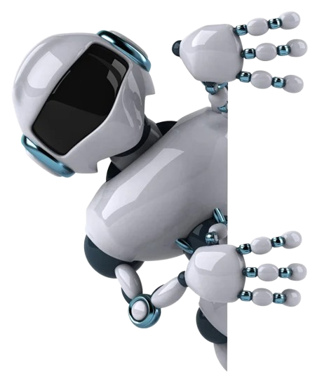

| Menú |
|---|
PIONEROS DE LA COMPUTACION

ALAN MATHISON TURING
En 1937 publicó un célebre artículo en el que definió una
máquina calculadora de capacidad infinita que operaba
basándose en una
serie de instrucciones lógicas, sentando
así las bases del concepto moderno de algoritmo.Turing
describió en
términos matemáticos precisos cómo un siste-
ma automático con reglas extremadamente simples podía
efectuar toda clase de
operaciones matemáticas expresadas
en un lenguaje formal determinado.La máquina de Turing
era tanto un ejemplo de su teoría
de computación como una
prueba de que un cierto tipo de máquina computadora podía
ser construida.Alan Turing definió además un
método teórico
para decidir si una máquina era capaz de pensar como un
hombre y realizó
contribuciones a otras ramas de la matemá-
tica aplicada, como la aplicación de métodos analíticos y me-
cánicos al
problema biológico de la morfogénesis.
MI ARGUMENTO SOBRE LO VISTO EN LAS CLASES
De lo que vimos en clases se habló un poco de este señor Alan Turing,
donde él era un matemático que publica un artículo
donde hablaba de
una máquina calculadora con capacidad de realizar cualquier operación
matemática. También colaboró en la
segunda guerra mundial
descifrando los mensajes codificados. Su muerte fue por una intoxica-
ción donde se especula si fue
suicidio o accidente, ya que tenía mucha
presión por su homosexualidad.
RICHARD STALLMAN .
Fundó el proyecto GNU en 1984 con el objeto de desarrollar
un sistema operativo libre GNU
Una variante de GNU son los actuales sistemas basados en el
kernel Linux,
y que juntos constituyen el popular GNU/Linux
Recibió en 1991 el Grace Hopper, de la Association for Computing
Machinery -la agrupación de informática más importante de los
Estados Unidos-
, por el desarrollo del Emacs. En 1990 le habían
otorgado la beca de la
MacArthur Foundation y, en 1996,
el doctorado honorario del Instituto Real
de Tecnología de Suecia. Dos años después recibió -con Linus
Torvalds- el premio Pioneer (pionero).